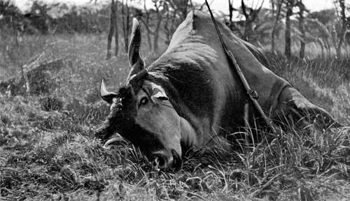

Chapter III. Further Shooting Experiences In Central Angoniland
Description
This section is from the book "Wild Life In Central Africa", by Denis D. Lyell. Also available from Amazon: Wild Life in Central Africa.
Chapter III. Further Shooting Experiences In Central Angoniland
Two bull elands shot — One a very large one—Measurements given — Weight of a large eland—Rich fat obtained from elands—Change to my new camp—List of huts made and cost—An insolent native—False evidence—The best way to treat an insolent native—Oribi and reedbuck shot—Hartebeests companionable animals — Roan antelope wounded and found later—Two roan antelopes killed — Collecting blood smears of game—A fine roan lost in North-Eastern Rhodesia— Good trophies shot by chance—A splendid pair of elephant tusks obtained by Mr. Melland in North-Eastern Rhodesia—A friend shoots two lions on his first trip—Loneliness of life in the wilds—A fine lion missed—A tropical storm—Game in heavy rain—A fine impala lost—Articles quoted from the Field: "Long Shots at Big Game," " Photographing Big Game," " Measurements of African Crocodiles."
I was on the trail again on the 15th, as the elands had been coming every night to the gardens to eat the fallen and dried maize stalks, and it did not take me long to get on the spoor of a large herd, which, judging from the large footprints of some of them, contained some big bulls. On fairly soft ground elands are very easy beasts to spoor, as, being very heavy, they leave deep footprints.
We had gone perhaps four or live miles when I caught sight of the herd, just as Kadango, the best man I had with me, saw them. As the game had not seen us, I told the men to lie down and keep low ; for they often put their heads up to watch proceedings, and this has sometimes scared the game and frightened them away as I was crawling up close. By the time I had got to within 150 yards the elands were beginning to think all was not right, for some of them faced in my direction with their horns laid back. I fancy they heard an occasional leaf crack, as all the vegetation was very dry and brittle. Suddenly they ran, and I saw a very large blue bull trotting clear of the others and fired twice at him, hearing both bullets tell. Then I lost sight of him for a time, but, seeing another bull with the herd which had a fine pair of horns, I waited for them to slow down, which they soon did.
I fired at him, and he went off looking very groggy. I ran after him, telling Kadango to go after the big bull and keep it in sight if possible. I soon got closer to my animal, which had stopped after running about 300 yards and looked back, and I fired a steady shot at its shoulder at a range of seventy yards or so. It did not move, but I saw it shiver slightly, so I immediately fired again for the same place, and it fell on its side, and was soon dead. On going up to it I found that it had three bullets all within 6in. of each other, just about right for the heart, except that the first one was about 4m. too far back. As I was looking at this fine animal, I heard Kadango calling me, so I went towards the sound and soon saw him running. He said the big eland was lying down, but was still alive, so I went back and soon saw it sitting with its forelegs under it ; but one hind leg stretched out in an unnatural position, and I knew this limb was broken. It had probably been splintered by my first shot and then broken under the great weight of the animal. I soon put the poor beast out of its misery, and then sat down to rest and have a smoke.
This was by far the heaviest eland I had ever shot, or seen, but I foolishly allowed him to lie as he was, and so I could not get an exact measurement of his height, as the muscles and sinews had stiffened up by the time the men had returned with the villagers I had sent them back for.
Very Old Eland Bull Shot In Nyasaland. (This animal was 6ft. in height and 7ft. round the thickest part of the neck; his horns measured 26½in.)
Here are the measurements, which were most carefully taken with a steel tape :
ft. | in. | |
From nose to end of flesh on tail ... | 13 | 4 |
From nose to root of tail ... | 11 | 5 |
Circumference of body at middle... | 9 | 6 |
Circumference of neck at middle ... | 7 | 0 |
Height from top of shoulder to heel of fore foot... | 6 | 0 |
Horns on straight ... | 2 | 2 |
About two years ago I shot another large bull eland, which gave a height of 6ft. o|in. at the shoulder, and he measured 8ft. 8in. round the middle of the body and 5ft. gin. round the centre of his neck, and his horns were 29½in. on the straight.
He was certainly a younger bull than the very large one I have given detailed measurements of, but, like all full-grown beasts, he had the thick tuft of matted hair on the frontlet of his skull.
Whether the measurement of a dead animal's height is a true index as to the height he stands when alive I cannot say, although I do not suppose the difference can be possibly more than one or two inches.
The eland which I hit with three bullets grouped close together was also a fine beast, full-grown, but not aged, and his height was an inch less than the old bull's, but his horns were longer, as they measured 29½in. and had amber-coloured tips. Elands that are very old sometimes wear their horns down to less than 2ft. in length, as they are constantly rubbing them on trees, and they are also often splintered and broken as well.
Elands are such grand, inoffensive animals that one regrets killing them, and yet they give good sport in tracking, and the meat and fat they yield is often needed by the hunter. I got over 151b. of fine, rich fat from the old bull, and this has to be boiled down in pots and the refuse skimmed off. The fat should first be chopped up into small pieces and boiled for several hours, and it should not be washed in water, as this tends to make it go bad.
Moreover, it should not be stored in tins, and the best receptacles are large native earthenware pots. Pieces of strong paper or cloth can be tied round the rims of the pots to keep the contents clean.
This large bull eland took twenty-five men all their time to remove to the village, some four miles off, and none of them carried less than 701b., and in the case of two men carrying a leg slung on a pole they had considerably more, so this bull must have weighed between 1800lb. and 2000lb. as he stood, for in such a large beast there is a great loss of weight in blood and the contents of the paunch when cutting up. A large bull's skin is very heavy, and it took two strong men to carry this one slung on a pole with the fat, heart, kidneys, and liver enclosed. The skin of the neck is almost as thick as the hide on a hippo's back, which is slightly over 1½in.
Continue to:
- prev: Shooting In Central Angoniland (Nyasaland). Part 6
- Table of Contents
- next: Further Shooting Experiences In Central Angoniland. Part 2